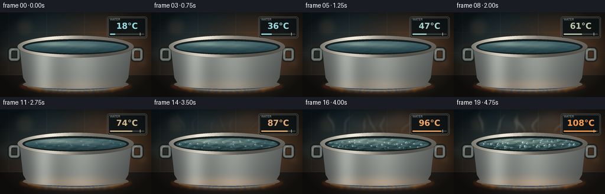
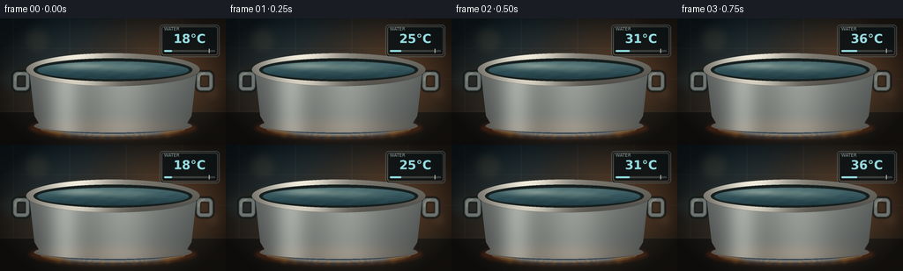

CODING AGENTS AS PIXEL WORLD MODELS
traex/DeepSeek-V4.1-Flash · phygen_106
点击播放 · 原生 RGB 像素
逐轮保存的候选
回放视频、检查图与代码变化。
每份候选均可单独播放。实际图片检查记录在下方工具轨迹中。
候选 01播放与检查图
点击播放 · 原生 RGB 像素


展开代码变化
--- 上一保存版本
+++ 本次保存版本
@@ -0,0 +1,381 @@
+from pathlib import Path
+
+import numpy as np
+from PIL import Image, ImageDraw, ImageFilter, ImageFont
+
+import artifact_io
+
+
+ROOT = Path(__file__).resolve().parent
+W, H, N = 256, 144, 20
+S = 4
+WS, HS = W * S, H * S
+FONT = "/usr/share/fonts/truetype/dejavu/DejaVuSans.ttf"
+FONT_BOLD = "/usr/share/fonts/truetype/dejavu/DejaVuSans-Bold.ttf"
+
+
+def smoothstep(edge0, edge1, value):
+ x = np.clip((value - edge0) / (edge1 - edge0), 0.0, 1.0)
+ return x * x * (3.0 - 2.0 * x)
+
+
+def mix(a, b, amount):
+ return np.asarray(a) * (1.0 - amount) + np.asarray(b) * amount
+
+
+def ellipse_mask(box, blur=0.0):
+ mask = Image.new("L", (WS, HS), 0)
+ draw = ImageDraw.Draw(mask)
+ draw.ellipse(tuple(int(v * S) for v in box), fill=255)
+ if blur:
+ mask = mask.filter(ImageFilter.GaussianBlur(blur * S))
+ return mask
+
+
+def paste_mask(image, color, mask):
+ layer = Image.new("RGBA", image.size, tuple(int(v) for v in color) + (255,))
+ image.alpha_composite(Image.composite(layer, Image.new("RGBA", image.size), mask))
+
+
+def make_background(t):
+ yy, xx = np.mgrid[0:HS, 0:WS]
+ x = xx / S
+ y = yy / S
+
+ top = np.array([18.0, 27.0, 31.0])
+ bottom = np.array([55.0, 46.0, 38.0])
+ v = np.clip(y / 106.0, 0.0, 1.0)[..., None]
+ rgb = top * (1.0 - v) + bottom * v
+
+ warm = np.exp(-(((x - 218.0) / 92.0) ** 2 + ((y - 45.0) / 68.0) ** 2))
+ cool = np.exp(-(((x - 46.0) / 70.0) ** 2 + ((y - 18.0) / 58.0) ** 2))
+ rgb += warm[..., None] * np.array([50.0, 24.0, 7.0])
+ rgb += cool[..., None] * np.array([4.0, 15.0, 20.0])
+
+ tile = np.zeros_like(x)
+ for gx in (15.0, 79.0, 143.0, 207.0):
+ tile += np.exp(-((x - gx) / 0.55) ** 2)
+ for gy in (34.0, 69.0):
+ tile += 0.65 * np.exp(-((y - gy) / 0.5) ** 2)
+ rgb += tile[..., None] * np.array([8.0, 9.0, 8.0])
+
+ counter = smoothstep(104.0, 108.0, y)
+ counter_rgb = np.zeros_like(rgb)
+ counter_rgb[..., 0] = 31.0 + 10.0 * np.clip((x - 30.0) / 200.0, 0.0, 1.0)
+ counter_rgb[..., 1] = 29.0 + 8.0 * np.clip((x - 30.0) / 200.0, 0.0, 1.0)
+ counter_rgb[..., 2] = 27.0 + 5.0 * np.clip((x - 30.0) / 200.0, 0.0, 1.0)
+ rgb = rgb * (1.0 - counter[..., None]) + counter_rgb * counter[..., None]
+
+ edge = np.exp(-((y - 106.0) / 0.7) ** 2)
+ rgb += edge[..., None] * np.array([22.0, 21.0, 18.0])
+
+ vignette = np.clip(1.15 - 0.75 * (((x - 128.0) / 142.0) ** 2 + ((y - 72.0) / 96.0) ** 2), 0.42, 1.0)
+ rgb *= vignette[..., None]
+ return Image.fromarray(np.clip(rgb, 0, 255).astype(np.uint8)).convert("RGBA")
+
+
+def add_background_bokeh(image, t):
+ glow = Image.new("RGBA", image.size, (0, 0, 0, 0))
+ draw = ImageDraw.Draw(glow)
+ for i, (cx, cy, r, color) in enumerate(
+ [
+ (42, 25, 16, (190, 151, 93, 24)),
+ (222, 27, 12, (234, 164, 91, 31)),
+ (195, 70, 20, (184, 111, 64, 18)),
+ (16, 70, 17, (99, 149, 154, 17)),
+ (241, 85, 9, (221, 181, 123, 22)),
+ ]
+ ):
+ pulse = 1.0 + 0.07 * np.sin(t * 4.0 + i * 1.7)
+ box = ((cx - r * pulse) * S, (cy - r * pulse) * S, (cx + r * pulse) * S, (cy + r * pulse) * S)
+ draw.ellipse(box, fill=color)
+ glow = glow.filter(ImageFilter.GaussianBlur(5 * S))
+ image.alpha_composite(glow)
+
+
+def pot_body_mask():
+ mask = Image.new("L", (WS, HS), 0)
+ draw = ImageDraw.Draw(mask)
+ draw.polygon(
+ [
+ (33 * S, 58 * S),
+ (223 * S, 58 * S),
+ (217 * S, 111 * S),
+ (211 * S, 121 * S),
+ (199 * S, 127 * S),
+ (57 * S, 127 * S),
+ (45 * S, 121 * S),
+ (39 * S, 111 * S),
+ ],
+ fill=255,
+ )
+ draw.ellipse((31 * S, 40 * S, 225 * S, 76 * S), fill=255)
+ draw.ellipse((39 * S, 114 * S, 217 * S, 130 * S), fill=255)
+ return mask
+
+
+def render_pot(image, t, heat, activity):
+ # Handles sit behind the pot body.
+ handles = Image.new("RGBA", image.size, (0, 0, 0, 0))
+ hdraw = ImageDraw.Draw(handles)
+ for box in [(13, 59, 35, 84), (221, 59, 243, 84)]:
+ b = tuple(int(v * S) for v in box)
+ hdraw.rounded_rectangle(b, radius=7 * S, outline=(18, 24, 25, 210), width=7 * S)
+ inset = (b[0] + 2 * S, b[1] + 2 * S, b[2] - 2 * S, b[3] - 2 * S)
+ hdraw.rounded_rectangle(inset, radius=5 * S, outline=(111, 119, 116, 245), width=4 * S)
+ highlight = (b[0] + 4 * S, b[1] + 3 * S, b[2] - 4 * S, b[3] - 5 * S)
+ hdraw.arc(highlight, 178, 270, fill=(205, 204, 188, 150), width=1 * S)
+ handles = handles.filter(ImageFilter.GaussianBlur(0.45 * S))
+ image.alpha_composite(handles)
+
+ # Warm burner glow and a compact ring of flame below the vessel.
+ burner = Image.new("RGBA", image.size, (0, 0, 0, 0))
+ bdraw = ImageDraw.Draw(burner)
+ bdraw.ellipse((31 * S, 111 * S, 225 * S, 139 * S), fill=(235, 93, 28, 45))
+ bdraw.ellipse((52 * S, 120 * S, 204 * S, 137 * S), fill=(255, 153, 55, 67))
+ bdraw.ellipse((70 * S, 124 * S, 186 * S, 136 * S), fill=(58, 151, 255, 65))
+ for i in range(11):
+ cx = 66 + i * 12.4
+ h = (5.0 + 4.5 * np.sin(t * 8.0 + i * 1.9)) * (0.45 + 0.55 * heat)
+ bdraw.polygon(
+ [
+ ((cx - 2.2) * S, 136 * S),
+ ((cx + 0.2 * np.sin(t * 6 + i)) * S, (132 - h) * S),
+ ((cx + 2.2) * S, 136 * S),
+ ],
+ fill=(255, 166, 63, 100),
+ )
+ burner = burner.filter(ImageFilter.GaussianBlur(2.3 * S))
+ image.alpha_composite(burner)
+
+ # Main brushed-steel body.
+ yy, xx = np.mgrid[0:HS, 0:WS]
+ x = xx / S
+ y = yy / S
+ u = (x - 128.0) / 96.0
+ v = np.clip((y - 46.0) / 82.0, 0.0, 1.0)
+ broad = 0.66 + 0.44 * np.exp(-((u + 0.57) / 0.19) ** 2)
+ broad += 0.23 * np.exp(-((u - 0.12) / 0.32) ** 2)
+ broad -= 0.29 * np.abs(u) ** 2
+ broad -= 0.23 * v
+ brush = 0.025 * np.sin(y * 24.0 + np.sin(x * 0.12) * 2.5)
+ steel = np.stack(
+ [
+ 54.0 + 121.0 * broad + 4.0 * brush,
+ 58.0 + 123.0 * broad + 3.0 * brush,
+ 59.0 + 117.0 * broad + 1.5 * brush,
+ ],
+ axis=-1,
+ )
+ lower_warm = np.exp(-(((x - 128.0) / 86.0) ** 2 + ((y - 125.0) / 11.0) ** 2))
+ steel += lower_warm[..., None] * np.array([40.0, 19.0, 4.0]) * (0.5 + 0.5 * heat)
+ body = Image.fromarray(np.clip(steel, 0, 255).astype(np.uint8)).convert("RGBA")
+ image.alpha_composite(Image.composite(body, Image.new("RGBA", image.size), pot_body_mask()))
+
+ # Elliptical rim with directional metallic highlights.
+ outer = np.array(ellipse_mask((29.5, 39.5, 226.5, 77.0), 0.18))
+ inner = np.array(ellipse_mask((38.0, 45.5, 218.0, 71.5), 0.18))
+ ring = np.clip(outer.astype(np.int16) - inner.astype(np.int16), 0, 255).astype(np.uint8)
+ ring_img = Image.fromarray(ring, "L")
+ rim_v = np.clip((y - 39.5) / 37.5, 0.0, 1.0)
+ rim_u = np.clip((x - 29.5) / 197.0, 0.0, 1.0)
+ rim_lum = 115.0 + 125.0 * np.exp(-((rim_u - 0.28) / 0.22) ** 2) - 38.0 * rim_v
+ rim_rgb = np.stack([rim_lum * 1.02, rim_lum, rim_lum * 0.94], axis=-1)
+ rim = Image.fromarray(np.clip(rim_rgb, 0, 255).astype(np.uint8)).convert("RGBA")
+ image.alpha_composite(Image.composite(rim, Image.new("RGBA", image.size), ring_img))
+
+ # Dark inner wall gives the water real depth.
+ water_mask = ellipse_mask((42.0, 49.0, 214.0, 69.0), 0.12)
+ wall_mask = Image.fromarray(
+ np.clip(
+ np.array(ellipse_mask((38.0, 45.5, 218.0, 71.5), 0.12)).astype(np.int16)
+ - np.array(water_mask).astype(np.int16),
+ 0,
+ 255,
+ ).astype(np.uint8),
+ "L",
+ )
+ paste_mask(image, (21, 31, 32), wall_mask)
+
+ # Water surface, initially glassy and then increasingly turbulent.
+ water_u = (x - 128.0) / 86.0
+ water_v = np.clip((y - 49.0) / 20.0, 0.0, 1.0)
+ water = np.stack(
+ [
+ 67.0 - 37.0 * water_v,
+ 103.0 - 44.0 * water_v,
+ 111.0 - 43.0 * water_v,
+ ],
+ axis=-1,
+ )
+ reflection = np.exp(-(((x - 91.0) / 29.0) ** 2 + ((y - 54.0) / 4.1) ** 2))
+ reflection += 0.55 * np.exp(-(((x - 143.0) / 33.0) ** 2 + ((y - 56.0) / 5.0) ** 2))
+ water += reflection[..., None] * np.array([64.0, 55.0, 43.0])
+
+ ripple = np.sin((x - 38.0) * 0.18 + t * 12.0 + 1.7 * np.sin(y * 0.9 + x * 0.03))
+ ripple += 0.55 * np.sin((x - 39.0) * 0.37 - t * 18.0 + y * 0.6)
+ water += ripple[..., None] * (2.0 + 12.0 * activity) * np.array([0.9, 1.0, 1.05])
+ water += activity * np.array([7.0, 4.0, 0.0])
+ water_img = Image.fromarray(np.clip(water, 0, 255).astype(np.uint8)).convert("RGBA")
+ image.alpha_composite(Image.composite(water_img, Image.new("RGBA", image.size), water_mask))
+
+ # Rising bubbles, clipped to the elliptical surface.
+ bubbles = Image.new("RGBA", image.size, (0, 0, 0, 0))
+ bub = ImageDraw.Draw(bubbles)
+ for i in range(54):
+ start = 0.16 + 0.78 * ((i * 0.61803398875) % 1.0)
+ strength = smoothstep(start, min(1.0, start + 0.12), t)
+ if activity < 0.04 or strength <= 0.02:
+ continue
+ cycle = (t * (1.7 + 0.9 * ((i * 0.37) % 1.0)) + (i * 0.271) % 1.0) % 1.0
+ r = (0.65 + 2.1 * ((i * 0.73) % 1.0)) * (0.78 + 0.3 * activity)
+ cx = 47.0 + ((i * 47 + 17) % 162) + 2.2 * np.sin(t * 7.0 + i)
+ cy = 67.0 - cycle * (13.5 + 2.5 * ((i * 0.19) % 1.0))
+ alpha = int(210 * strength * activity * np.sin(np.pi * cycle) ** 0.45)
+ if alpha <= 5:
+ continue
+ box = ((cx - r) * S, (cy - r * 0.72) * S, (cx + r) * S, (cy + r * 0.72) * S)
+ bub.ellipse(box, fill=(127, 193, 201, max(10, alpha // 4)), outline=(185, 226, 225, alpha), width=max(1, int(S * 0.55)))
+ if r > 1.35:
+ hr = max(0.7, r * 0.3)
+ bub.ellipse(
+ ((cx - r * 0.35 - hr) * S, (cy - r * 0.25 - hr) * S, (cx - r * 0.35 + hr) * S, (cy - r * 0.25 + hr) * S),
+ fill=(231, 245, 238, min(245, alpha + 25)),
+ )
+ bubbles = bubbles.filter(ImageFilter.GaussianBlur(0.22 * S))
+ bubble_arr = np.array(bubbles)
+ bubble_arr[..., 3] = np.minimum(bubble_arr[..., 3], np.array(water_mask))
+ image.alpha_composite(Image.fromarray(bubble_arr, "RGBA"))
+
+ # Bright foam and popping rings on the rolling surface.
+ foam = Image.new("RGBA", image.size, (0, 0, 0, 0))
+ fdraw = ImageDraw.Draw(foam)
+ for i in range(38):
+ phase = (t * (2.1 + 0.5 * ((i * 0.31) % 1.0)) + i * 0.173) % 1.0
+ if activity < 0.25 or ((i * 0.47) % 1.0) > activity:
+ continue
+ cx = 48.0 + ((i * 31 + 9) % 160)
+ cy = 51.0 + 14.0 * ((i * 0.37) % 1.0) + 1.2 * np.sin(t * 8.0 + i)
+ r = 0.45 + 1.35 * ((i * 0.61) % 1.0)
+ alpha = int(125 * activity * (0.45 + 0.55 * np.sin(np.pi * phase)))
+ fdraw.ellipse(((cx - r) * S, (cy - r * 0.55) * S, (cx + r) * S, (cy + r * 0.55) * S), outline=(225, 245, 238, alpha), width=S)
+ foam = foam.filter(ImageFilter.GaussianBlur(0.25 * S))
+ foam_arr = np.array(foam)
+ foam_arr[..., 3] = np.minimum(foam_arr[..., 3], np.array(water_mask))
+ image.alpha_composite(Image.fromarray(foam_arr, "RGBA"))
+
+ # Front lip and a soft reflected glow anchor the pot to the burner.
+ front = Image.new("RGBA", image.size, (0, 0, 0, 0))
+ fdraw = ImageDraw.Draw(front)
+ fdraw.arc((37 * S, 109 * S, 219 * S, 133 * S), 8, 172, fill=(198, 194, 177, 150), width=2 * S)
+ fdraw.arc((44 * S, 116 * S, 212 * S, 135 * S), 14, 166, fill=(255, 183, 90, 65), width=2 * S)
+ front = front.filter(ImageFilter.GaussianBlur(0.6 * S))
+ image.alpha_composite(front)
+
+
+def add_steam(image, t, activity):
+ steam = Image.new("RGBA", image.size, (0, 0, 0, 0))
+ draw = ImageDraw.Draw(steam)
+ amount = smoothstep(0.32, 0.94, t) * (0.35 + 0.65 * activity)
+ if amount <= 0.01:
+ return
+
+ for i in range(8):
+ base_x = 54.0 + i * 22.5 + 5.0 * np.sin(t * 4.1 + i * 1.9)
+ top_x = base_x + 8.0 * np.sin(i * 1.31 + 0.7) + (i - 3.5) * 1.3
+ base_y = 47.0 + 3.0 * np.sin(i * 2.3)
+ top_y = 2.0 + 13.0 * ((i * 0.37) % 1.0)
+ points = []
+ widths = []
+ for j in range(24):
+ p = j / 23.0
+ yy = base_y * (1.0 - p) + top_y * p
+ drift = 9.5 * np.sin(p * 4.2 + i * 1.8 + t * 2.1) * p
+ drift += 4.2 * np.sin(p * 9.0 - t * 3.2 + i) * p
+ xx = base_x * (1.0 - p) + top_x * p + drift
+ points.append((xx * S, yy * S))
+ widths.append((0.9 + 2.8 * np.sin(np.pi * p) ** 0.7) * amount)
+ for j in range(len(points) - 1):
+ alpha = int(40 + 65 * np.sin(np.pi * (j / (len(points) - 1))) ** 0.6)
+ draw.line(
+ [points[j], points[j + 1]],
+ fill=(235, 240, 230, min(115, alpha)),
+ width=max(S, int(widths[j] * S)),
+ )
+ steam = steam.filter(ImageFilter.GaussianBlur(2.3 * S))
+ image.alpha_composite(steam)
+
+ haze = Image.new("RGBA", image.size, (0, 0, 0, 0))
+ hdraw = ImageDraw.Draw(haze)
+ for i in range(4):
+ cx = 86.0 + i * 27.0 + 4.0 * np.sin(t * 3.0 + i)
+ cy = 24.0 + 5.0 * np.sin(i * 1.6)
+ rx = 17.0 + 3.0 * i
+ ry = 9.0 + 2.0 * i
+ hdraw.ellipse(((cx - rx) * S, (cy - ry) * S, (cx + rx) * S, (cy + ry) * S), fill=(234, 238, 225, int(20 * amount)))
+ haze = haze.filter(ImageFilter.GaussianBlur(8 * S))
+ image.alpha_composite(haze)
+
+
+def add_temperature_panel(image, t, temp):
+ panel = Image.new("RGBA", image.size, (0, 0, 0, 0))
+ draw = ImageDraw.Draw(panel)
+ box = (181 * S, 7 * S, 249 * S, 44 * S)
+ draw.rounded_rectangle(box, radius=4 * S, fill=(10, 17, 20, 218), outline=(144, 164, 161, 88), width=S)
+ draw.rounded_rectangle((183 * S, 9 * S, 247 * S, 42 * S), radius=3 * S, outline=(255, 255, 255, 24), width=S)
+
+ small_font = ImageFont.truetype(FONT, 5 * S)
+ value_font = ImageFont.truetype(FONT_BOLD, 14 * S)
+ draw.text((186 * S, 9 * S), "WATER", font=small_font, fill=(167, 186, 183, 205))
+
+ value = f"{int(round(temp))}\N{DEGREE SIGN}C"
+ bbox = draw.textbbox((0, 0), value, font=value_font)
+ value_x = (181 + 34) * S - (bbox[2] - bbox[0]) / 2
+ hot_mix = np.clip((temp - 35.0) / 72.0, 0.0, 1.0)
+ value_color = tuple(int(v) for v in mix((148, 221, 226), (255, 155, 75), hot_mix)) + (255,)
+ draw.text((value_x, 15 * S), value, font=value_font, fill=value_color)
+
+ bar_box = (186 * S, 36 * S, 244 * S, 38 * S)
+ draw.rounded_rectangle(bar_box, radius=S, fill=(58, 72, 72, 180))
+ fill_w = int((244 - 186) * np.clip(temp / 112.0, 0.0, 1.0))
+ if fill_w > 1:
+ draw.rounded_rectangle((186 * S, 36 * S, (186 + fill_w) * S, 38 * S), radius=S, fill=value_color)
+ threshold_x = 186 + int((244 - 186) * 100.0 / 112.0)
+ draw.line([(threshold_x * S, 34.7 * S), (threshold_x * S, 39.3 * S)], fill=(255, 239, 210, 185), width=S)
+
+ panel = panel.filter(ImageFilter.GaussianBlur(0.15 * S))
+ image.alpha_composite(panel)
+
+
+def render_frame(frame_index):
+ t = frame_index / (N - 1)
+ temp = 18.0 + 90.0 * (t ** 0.86)
+ activity = float(smoothstep(0.38, 0.95, t))
+ heat = float(smoothstep(0.0, 0.85, t))
+
+ image = make_background(t)
+ add_background_bokeh(image, t)
+ render_pot(image, t, heat, activity)
+ add_steam(image, t, activity)
+ add_temperature_panel(image, t, temp)
+
+ # Gentle final grade, deterministic grain, and downsample for clean pixel edges.
+ rgb = np.array(image.convert("RGB")).astype(np.float32)
+ yy, xx = np.mgrid[0:HS, 0:WS]
+ glow = np.exp(-(((xx / S - 126.0) / 102.0) ** 2 + ((yy / S - 77.0) / 70.0) ** 2))
+ rgb += glow[..., None] * np.array([2.0, 1.0, -1.0])
+ rng = np.random.default_rng(731 + frame_index)
+ rgb += rng.normal(0.0, 1.45, rgb.shape)
+ rgb = np.clip(rgb, 0, 255).astype(np.uint8)
+ frame = Image.fromarray(rgb).resize((W, H), Image.Resampling.LANCZOS)
+ return np.array(frame, dtype=np.uint8)
+
+
+def main():
+ frames = np.stack([render_frame(i) for i in range(N)])
+ artifact_io.save(frames, ROOT)
+ print(f"saved {frames.shape} video artifacts to {ROOT}")
+
+
+if __name__ == "__main__":
+ main()
候选 02播放与检查图
点击播放 · 原生 RGB 像素

展开代码变化
--- 上一保存版本
+++ 本次保存版本
@@ -197,7 +197,7 @@
)
paste_mask(image, (21, 31, 32), wall_mask)
- # Water surface, initially glassy and then increasingly turbulent.
+ # Water surface: broad convection appears first, then breaks into a hard boil.
water_u = (x - 128.0) / 86.0
water_v = np.clip((y - 49.0) / 20.0, 0.0, 1.0)
water = np.stack(
@@ -212,9 +212,12 @@
reflection += 0.55 * np.exp(-(((x - 143.0) / 33.0) ** 2 + ((y - 56.0) / 5.0) ** 2))
water += reflection[..., None] * np.array([64.0, 55.0, 43.0])
+ early_heat = float(smoothstep(0.02, 0.56, t))
ripple = np.sin((x - 38.0) * 0.18 + t * 12.0 + 1.7 * np.sin(y * 0.9 + x * 0.03))
ripple += 0.55 * np.sin((x - 39.0) * 0.37 - t * 18.0 + y * 0.6)
- water += ripple[..., None] * (2.0 + 12.0 * activity) * np.array([0.9, 1.0, 1.05])
+ water += ripple[..., None] * (3.5 + 4.5 * early_heat + 10.0 * activity) * np.array([0.9, 1.0, 1.05])
+ convection = np.exp(-(((x - (126.0 + 13.0 * np.sin(t * 5.0))) / 48.0) ** 2 + ((y - 58.0) / 5.8) ** 2))
+ water += convection[..., None] * early_heat * np.array([17.0, 14.0, 9.0])
water += activity * np.array([7.0, 4.0, 0.0])
water_img = Image.fromarray(np.clip(water, 0, 255).astype(np.uint8)).convert("RGBA")
image.alpha_composite(Image.composite(water_img, Image.new("RGBA", image.size), water_mask))
@@ -222,16 +225,17 @@
# Rising bubbles, clipped to the elliptical surface.
bubbles = Image.new("RGBA", image.size, (0, 0, 0, 0))
bub = ImageDraw.Draw(bubbles)
- for i in range(54):
- start = 0.16 + 0.78 * ((i * 0.61803398875) % 1.0)
- strength = smoothstep(start, min(1.0, start + 0.12), t)
- if activity < 0.04 or strength <= 0.02:
+ for i in range(68):
+ start = 0.055 + 0.82 * ((i * 0.61803398875) % 1.0)
+ strength = smoothstep(start, min(1.0, start + 0.1), t)
+ if strength <= 0.02:
continue
cycle = (t * (1.7 + 0.9 * ((i * 0.37) % 1.0)) + (i * 0.271) % 1.0) % 1.0
r = (0.65 + 2.1 * ((i * 0.73) % 1.0)) * (0.78 + 0.3 * activity)
cx = 47.0 + ((i * 47 + 17) % 162) + 2.2 * np.sin(t * 7.0 + i)
cy = 67.0 - cycle * (13.5 + 2.5 * ((i * 0.19) % 1.0))
- alpha = int(210 * strength * activity * np.sin(np.pi * cycle) ** 0.45)
+ bubble_activity = 0.25 + 0.75 * activity
+ alpha = int(215 * strength * bubble_activity * np.sin(np.pi * cycle) ** 0.45)
if alpha <= 5:
continue
box = ((cx - r) * S, (cy - r * 0.72) * S, (cx + r) * S, (cy + r * 0.72) * S)
@@ -276,7 +280,7 @@
def add_steam(image, t, activity):
steam = Image.new("RGBA", image.size, (0, 0, 0, 0))
draw = ImageDraw.Draw(steam)
- amount = smoothstep(0.32, 0.94, t) * (0.35 + 0.65 * activity)
+ amount = smoothstep(0.18, 0.9, t) * (0.42 + 0.58 * activity)
if amount <= 0.01:
return
@@ -299,7 +303,7 @@
alpha = int(40 + 65 * np.sin(np.pi * (j / (len(points) - 1))) ** 0.6)
draw.line(
[points[j], points[j + 1]],
- fill=(235, 240, 230, min(115, alpha)),
+ fill=(235, 240, 230, min(132, alpha)),
width=max(S, int(widths[j] * S)),
)
steam = steam.filter(ImageFilter.GaussianBlur(2.3 * S))
候选 03播放与检查图
候选 04播放与检查图
点击播放 · 原生 RGB 像素

展开代码变化
--- 上一保存版本
+++ 本次保存版本
@@ -176,7 +176,7 @@
outer = np.array(ellipse_mask((29.5, 39.5, 226.5, 77.0), 0.18))
inner = np.array(ellipse_mask((38.0, 45.5, 218.0, 71.5), 0.18))
ring = np.clip(outer.astype(np.int16) - inner.astype(np.int16), 0, 255).astype(np.uint8)
- ring_img = Image.fromarray(ring, "L")
+ ring_img = Image.fromarray(ring)
rim_v = np.clip((y - 39.5) / 37.5, 0.0, 1.0)
rim_u = np.clip((x - 29.5) / 197.0, 0.0, 1.0)
rim_lum = 115.0 + 125.0 * np.exp(-((rim_u - 0.28) / 0.22) ** 2) - 38.0 * rim_v
@@ -192,8 +192,7 @@
- np.array(water_mask).astype(np.int16),
0,
255,
- ).astype(np.uint8),
- "L",
+ ).astype(np.uint8)
)
paste_mask(image, (21, 31, 32), wall_mask)
@@ -249,7 +248,7 @@
bubbles = bubbles.filter(ImageFilter.GaussianBlur(0.22 * S))
bubble_arr = np.array(bubbles)
bubble_arr[..., 3] = np.minimum(bubble_arr[..., 3], np.array(water_mask))
- image.alpha_composite(Image.fromarray(bubble_arr, "RGBA"))
+ image.alpha_composite(Image.fromarray(bubble_arr))
# Bright foam and popping rings on the rolling surface.
foam = Image.new("RGBA", image.size, (0, 0, 0, 0))
@@ -266,7 +265,7 @@
foam = foam.filter(ImageFilter.GaussianBlur(0.25 * S))
foam_arr = np.array(foam)
foam_arr[..., 3] = np.minimum(foam_arr[..., 3], np.array(water_mask))
- image.alpha_composite(Image.fromarray(foam_arr, "RGBA"))
+ image.alpha_composite(Image.fromarray(foam_arr))
# Front lip and a soft reflected glow anchor the pot to the burner.
front = Image.new("RGBA", image.size, (0, 0, 0, 0))
可观测工具轨迹
实际执行的命令与返回图片。
命令 1exit 0
/bin/bash -c "pwd && rg --files -g 'prompt.txt' -g 'GENERATION_RULES.md' -g 'task_spec.json' -g '"'!node_modules'"'"
命令 2exit 0
/bin/bash -c "find . -maxdepth 2 -type f | sort | sed -n '1,200p'"
命令 3exit 0
/bin/bash -c 'git status --short --branch'
命令 4exit 0
/bin/bash -c 'cat prompt.txt'
命令 5exit 0
/bin/bash -c 'cat GENERATION_RULES.md'
命令 6exit 0
/bin/bash -c 'cat task_spec.json'
命令 7exit 0
/bin/bash -c "sed -n '1,260p' artifact_io.py && printf '\\n--- player_template ---\\n' && sed -n '1,260p' player_template.html"
命令 8exit 0
/bin/bash -c "python - <<'PY'
import PIL, numpy
print('PIL', PIL.__version__)
print('numpy', numpy.__version__)
PY"命令 9exit 0
/bin/bash -c "fc-match 'DejaVu Sans' | head -1; fc-match 'Liberation Sans' | head -1"
命令 10exit 0
/bin/bash -c 'ls /usr/share/fonts/truetype/dejavu/DejaVuSans-Bold.ttf /usr/share/fonts/truetype/dejavu/DejaVuSans.ttf 2>/dev/null'
命令 11exit 0
/bin/bash -c 'python generate.py'
命令 12exit 0
/bin/bash -c 'file inspection.png frames/00.png frames/19.png && identify inspection.png frames/00.png frames/19.png 2>/dev/null || true'
命令 13exit 0
/bin/bash -c 'command -v chafa || command -v viu || command -v img2txt || command -v jp2 || true'
命令 14exit 0
/bin/bash -c "python - <<'PY' from PIL import Image for p in ['inspection.png','frames/00.png','frames/19.png','transition_check.png']: im=Image.open(p) print(p, im.size, im.mode) PY"
命令 15exit 0
/bin/bash -c "python - <<'PY'
from PIL import Image
im=Image.open('frames/19.png').resize((64,36), Image.Resampling.LANCZOS)
pix=im.load()
chars=' .:-=+*#%@'
for y in range(0,36,2):
line=''
for x in range(64):
r,g,b=pix[x,y]
lum=(.2126*r+.7152*g+.0722*b)/255
line+=chars[min(9,int(lum*10))]
print(line)
PY"命令 16exit 0
/bin/bash -c "command -v tesseract || true; python - <<'PY' from PIL import Image, ImageStat for p in ['frames/00.png','frames/04.png','frames/08.png','frames/12.png','frames/16.png','frames/19.png']: im=Image.open(p) s=ImageStat.Stat(im) print(p, 'mean', tuple(round(x,1) for x in s.mean), 'std', tuple(round(x,1) for x in s.stddev)) PY"
命令 17exit 0
/bin/bash -c "python - <<'PY'
from pathlib import Path
from PIL import Image
import numpy as np
imgs=[np.asarray(Image.open(p),dtype=np.int16) for p in sorted(Path('frames').glob('*.png'))]
for i in range(1,len(imgs)):
d=np.abs(imgs[i]-imgs[i-1])
print(f'{i-1:02d}->{i:02d}: MAE={d.mean():5.2f} changed>12={(d.max(2)>12).mean()*100:5.1f}%')
print('first-last MAE', np.abs(imgs[-1]-imgs[0]).mean())
print('artifact sizes:')
for p in ['pixels.npz','index.html','inspection.png','transition_check.png']:
print(p, Path(p).stat().st_size)
PY"命令 18exit 0
/bin/bash -c 'mkdir -p candidates/candidate_01 && cp -a frames inspection.png transition_check.png index.html pixels.npz candidates/candidate_01/'
命令 19exit 0
/bin/bash -c 'python generate.py'
命令 20exit 0
/bin/bash -c "python - <<'PY'
from pathlib import Path
from PIL import Image
import numpy as np
imgs=[np.asarray(Image.open(p),dtype=np.int16) for p in sorted(Path('frames').glob('*.png'))]
for i in range(1,len(imgs)):
d=np.abs(imgs[i]-imgs[i-1])
print(f'{i-1:02d}->{i:02d}: MAE={d.mean():5.2f} changed>12={(d.max(2)>12).mean()*100:5.1f}%')
print('first-last MAE', np.abs(imgs[-1]-imgs[0]).mean())
PY"命令 21exit 0
/bin/bash -c "python - <<'PY'
import json, zipfile
from pathlib import Path
import numpy as np
from PIL import Image
spec=json.loads(Path('task_spec.json').read_text())
frames=sorted(Path('frames').glob('*.png'))
assert len(frames)==spec['frames']==20
arr=np.stack([np.asarray(Image.open(p)) for p in frames])
assert arr.shape==(20,144,256,3) and arr.dtype==np.uint8
with np.load('pixels.npz') as z:
p=z['pixels']
assert p.shape==(144,256,20) and p.dtype==np.uint32
packed=(arr[...,0].astype(np.uint32)<<16)|(arr[...,1].astype(np.uint32)<<8)|arr[...,2]
assert np.array_equal(p,packed.transpose(1,2,0))
html=Path('index.html').read_text()
assert '__DATA__' not in html and '__ID__' not in html and 'window.__pixelReady=true' in html
print('frames',arr.shape,'pixels',p.shape,'unique colors',len(np.unique(arr.reshape(-1,3),axis=0)))
print('mean range',arr.mean(axis=(1,2,3)).min().round(2),arr.mean(axis=(1,2,3)).max().round(2))
print('artifacts',[(x,Path(x).stat().st_size) for x in ['pixels.npz','index.html','inspection.png','transition_check.png']])
PY"命令 22exit 0
/bin/bash -c 'cp -a frames inspection.png transition_check.png index.html pixels.npz candidates/candidate_02/ 2>/dev/null || { mkdir -p candidates/candidate_02; cp -a frames inspection.png transition_check.png index.html pixels.npz candidates/candidate_02/; }'命令 23exit 0
/bin/bash -c "git status --short -- generate.py frames inspection.png transition_check.png index.html pixels.npz candidates | sed -n '1,120p'"
命令 24exit 0
/bin/bash -c "git status --short --untracked-files=all | sed -n '1,160p'"
命令 25exit 0
/bin/bash -c "ls -la | sed -n '1,120p'"
命令 26exit 0
/bin/bash -c 'python -B generate.py'
命令 27exit 0
/bin/bash -c "python -B - <<'PY'
import json
from pathlib import Path
import numpy as np
from PIL import Image
spec=json.loads(Path('task_spec.json').read_text())
paths=sorted(Path('frames').glob('*.png'))
assert len(paths)==spec['frames']
frames=np.stack([np.asarray(Image.open(p)) for p in paths])
assert frames.shape==(20,144,256,3) and frames.dtype==np.uint8
with np.load('pixels.npz') as z:
packed=z['pixels']
assert packed.shape==(144,256,20) and packed.dtype==np.uint32
rebuilt=(frames[...,0].astype(np.uint32)<<16)|(frames[...,1].astype(np.uint32)<<8)|frames[...,2]
assert np.array_equal(packed,rebuilt.transpose(1,2,0))
html=Path('index.html').read_text()
assert '__DATA__' not in html and '__ID__' not in html and 'window.__pixelReady=true' in html
assert Path('generate.py').is_file() and Path('inspection.png').is_file() and Path('transition_check.png').is_file()
print('PASS: 20 frames, 256x144 RGB, 4 fps, 5.0 s, packed pixels match, player initialized')
print('color coverage:', len(np.unique(frames.reshape(-1,3), axis=0)), 'unique colors')
PY
sha256sum generate.py pixels.npz index.html inspection.png transition_check.png"命令 28exit 0
/bin/bash -c 'find __pycache__ -maxdepth 1 -type f -print 2>/dev/null || true'
命令 29exit 0
/bin/bash -c "unlink __pycache__/artifact_io.cpython-311.pyc && rmdir __pycache__ && echo 'temporary cache removed'"
命令 30exit 0
/bin/bash -c "ls -ld candidates/candidate_01 candidates/candidate_02 && du -sh candidates/candidate_01 candidates/candidate_02 && python -B - <<'PY' from PIL import Image import numpy as np for p in ['candidates/candidate_01/inspection.png','candidates/candidate_02/inspection.png']: im=np.asarray(Image.open(p)) print(p, im.shape, round(float(im.mean()),2)) PY"
命令 31exit 0
/bin/bash -c "python -B - <<'PY'
from pathlib import Path
from PIL import Image
import numpy as np
for root in ['candidates/candidate_01/frames','candidates/candidate_02/frames','frames']:
a=[np.asarray(Image.open(p),dtype=np.int16) for p in sorted(Path(root).glob('*.png'))]
d=np.abs(a[-1]-a[0])
print(root, 'first-last MAE', round(float(d.mean()),3), 'changed>12', round(float((d.max(2)>12).mean()*100),2), '%')
PY"保存候选 4 份；完成命令 31 次；可验证图片返回 0 张。原始 API 响应与完整日志保留在本地。